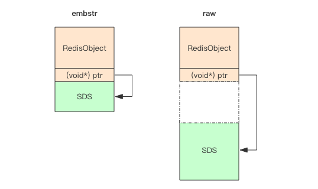
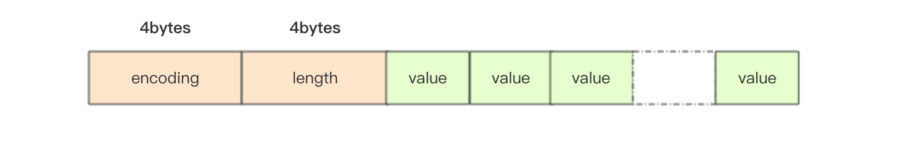
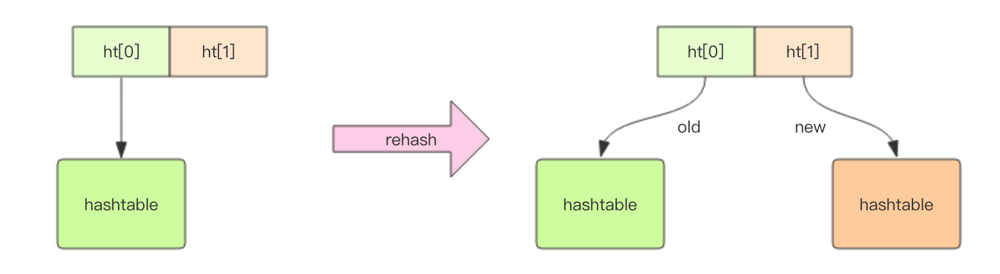
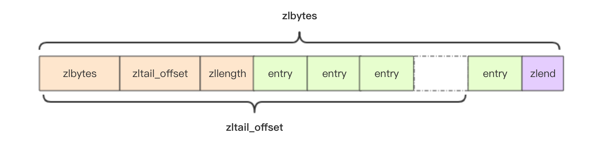
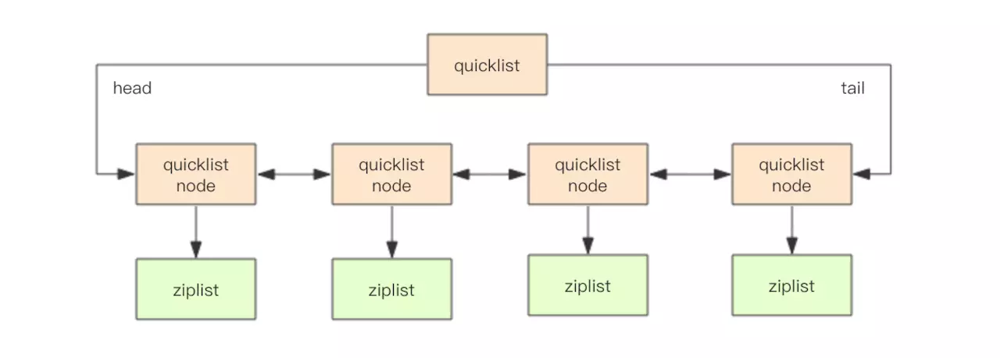
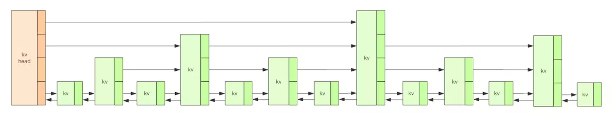

Redis基本数据结构之内部编码
前面我们讲到了Redis有5种基本数据结构：string、hash、list、set、zset，但是这5种数据结构内部是怎么实现的呢？
本篇文章基于 Redis 3.2
背景知识
怎么查看内部编码
我们可以通过object encoding key来查看对象的具体编码，比如：
127.0.0.1:6379> set name zhangsan
OK
127.0.0.1:6379> object encoding name
"embstr"
也可以使用debug object key，比如：
127.0.0.1:6379> set name sssssssssssssssssssssssssssssssssssssssssssss
OK
127.0.0.1:6379> debug object name
Value at:0x10030aa20 refcount:1 encoding:raw serializedlength:12 lru:8586926 lru_seconds_idle:14
RedisObject
Redis 存储的所有值对象在内部定义为 RedisObject, 内部结构如下：
struct RedisObject {
int4 type; // 4bits 对象的数据类型
int4 encoding; // 4bits 内部编码类型
int24 lru; // 24bits 对象最后一次被访问的时间
int32 refcount; // 4bytes 被引用的次数
void *ptr; // 8bytes，64-bit system
} robj;
这里要对 ptr 说明一下，ptr 的内容与数据内容有关，如果存储的是整数，则直接存储数据，否则将表示指向数据的指针。
这样一个 RedisObject 对象头需要占据 16 字节的存储空间。
string
内部编码
string 的内部编码有3种，Redis 会根据当前值的类型和长度决定使用哪种内部编码实现：
- int ：8个字节的长整形
- embstr ：小于等于44个字节的字符串
- raw ： 大于44个字节的字符串
127.0.0.1:6379> set stringkey 123
OK
127.0.0.1:6379> object encoding stringkey
"int"
127.0.0.1:6379> set stringkey abc
OK
127.0.0.1:6379> object encoding stringkey
"embstr"
127.0.0.1:6379> set stringkey abcdasdsajdsioajfsiojfdsjfndsjjasfbfajdnasndsdsadsajdbsajkdsajdbsa
OK
127.0.0.1:6379> object encoding stringkey
"raw"
SDS
Redis 的字符串叫着「SDS」，也就是Simple Dynamic String。它的结构是一个带长度信息的字节数组。
struct SDS<T> {
T capacity; // 数组容量
T len; // 数组长度
byte flags; // 特殊标识位，不理睬它
byte[] content; // 数组内容，存储实际的字符串内容
}
上面的 SDS 结构使用了范型 T，为什么不直接用 int 呢，这是因为当字符串比较短时，len 和 capacity 可以使用 byte 和 short 来表示，Redis 为了对内存做极致的优化，不同长度的字符串使用不同的结构体来表示。
capacity 和 len 有什么区别呢？capacity 表示所分配数组的长度，len 表示字符串的实际长度。我们知道字符串是可以修改的字符串，它要支持 append 操作。如果数组没有冗余空间，那么追加操作必然涉及到分配新数组，然后将旧内容复制过来，再 append 新内容。如果字符串的长度非常长，这样的内存分配和复制开销就会非常大。
embstr VS raw

如图所示，embstr 存储形式是这样一种存储形式，它将 RedisObject 对象头和 SDS 对象连续存在一起，使用 jemalloc 方法一次分配。而 raw 存储形式不一样，它需要两次 jemalloc，两个对象头在内存地址上一般是不连续的。
为什么 embstr 和 raw 的分界线是44个字节呢？上面我们说到 SDS 会根据不同长度的字符串使用不同的结构体来表示，当字符串较小时，SDS 的结构如下：
struct SDS {
int8 capacity; // 1byte
int8 len; // 1byte
int8 flags; // 1byte
byte[] content; // 内联数组，长度为 capacity
}
在字符串比较小时，SDS 对象头的大小是 capacity+3，至少是 3。意味着分配一个字符串的最小空间占用为 19 字节 (16+3)。
而内存分配器 jemalloc 分配内存大小的单位都是 2、4、8、16、32、64 等等，为了能容纳一个完整的 embstr 对象，jemalloc 最少会分配 32 字节的空间，如果字符串再稍微长一点，那就是 64 字节的空间。如果总体超出了 64 字节，Redis 认为它是一个大字符串，不再使用 emdstr 形式存储，而改用 raw 形式。
当分配 64 字节的时候，留给 content 的长度最多只有 45(64-19) 字节了，字符串又是以\0结尾（之所以多出这样一个字节，是为了便于直接使用 glibc 的字符串处理函数，以及为了便于字符串的调试打印输出），所以 embstr 最大能容纳的字符串长度就是 44。
扩容
字符串在长度小于 1M 之前，扩容空间采用加倍策略，也就是保留 100% 的冗余空间。当长度超过 1M 之后，为了避免加倍后的冗余空间过大而导致浪费，每次扩容只会多分配 1M 大小的冗余空间。
hash
内部编码
hash 内部编码有两种：
- ziplist : 当元素个数小于 hash-max-ziplist-entries 配置（默认 512 个），同时所有的值都小于 hash-max-ziplist-value 配置（默认 64 字节）时，Redis 会使用 ziplist 做为 hash 的内部实现，因为 ziplist 使用更加紧凑的结构实现多个元素的连续存储，更加节省内存。
- hashtable : 当无法满足 ziplist 的条件时，Redis 使用 hashtable 作为 hash 的内部实现，因为此时 ziplist 读写效率会下降，而 hashtable 的读写时间复杂度为 O(1)。
127.0.0.1:6379> hmset hashkey f1 v1 f2 v2
OK
127.0.0.1:6379> object encoding hashkey
"ziplist"
127.0.0.1:6379> hset hashkey f3 dasdnsajndajdnasdnasljdnaslkdnaskdnasjndsaldnasldnsajdnasldnaslkdnsadsakldnaskdnaslkdnasldksanldasdans
(integer) 1
127.0.0.1:6379> object encoding hashkey
"hashtable"
list
内部编码
Redis 的早期版本 list 内部编码有两种：
- ziplist : 当元素个数小于 list-max-ziplist-entries 配置（默认 512 个），同时所有的值都小于 list-max-ziplist-value 配置（默认 64 字节）时，Redis 会使用 ziplist 做为 list 的内部实现。
- linkedlist : 当无法满足 ziplist 的条件时，Redis 使用 linkedlist 作为 list 的内部实现。
但是 Redis 3.2 list 内部编码只有一种：
- quicklist : 它是以一个 ziplist 为节点的 linkedlist，它结合了 ziplist 和 linkedlist 两者的优势。quicklist 内部默认单个 ziplist 长度为 8k 字节，超出了这个字节数，就会新起一个 ziplist。ziplist 的长度由配置参数list-max-ziplist-size决定。
127.0.0.1:6379> rpush listkey e1 e2 e3
(integer) 3
127.0.0.1:6379> object encoding listkey
"quicklist"
set
内部编码
set 内部编码有两种：
- intset : 当集合中的元素都是整数且元素个数小于 set-max-intset-entries 配置（默认 512 个）时。
- hashtable : 当无法满足 intset 条件时。
127.0.0.1:6379> sadd setkey 1 2 3 4
(integer) 4
127.0.0.1:6379> object encoding setkey
"intset"
127.0.0.1:6379> sadd setkey a
(integer) 1
127.0.0.1:6379> object encoding setkey
"hashtable"
zset
内部编码
zset 内部编码有两种：
- ziplist : 当元素个数小于 zset-max-ziplist-entries 配置（默认 128 个），同时所有的值都小于 zset-max-ziplist-value 配置（默认 64 字节）时。
- skiplist : 当无法满足 ziplist 条件时。
127.0.0.1:6379> zadd zsetkey 50 e1 60 e2 30 e3
(integer) 3
127.0.0.1:6379> object encoding zsetkey
"ziplist"
127.0.0.1:6379> zadd zsetkey 20 "dasdnsajndajdnasdnasljdnaslkdnaskdnasjndsaldnasldnsajdnasldnaslkdnsadsakldnaskdnaslkdnasldksanldasdans"
(integer) 1
127.0.0.1:6379> object encoding zsetkey
"skiplist"
内部编码底层结构
intset
intset 会在 set 中使用，其结构如下
struct intset<T> {
int32 encoding; // 决定整数位宽是 16 位、32 位还是 64 位
int32 length; // 元素个数
int<T> contents; // 整数数组，可以是 16 位、32 位和 64 位
}

intset 保存的整数类型根据长度划分，当保存的整数超过当前类型时，将会触发自动升级操作且升级后不再做回退。因此使用 intset 编码的集合时，尽量保持整数范围一致，防止个别大整数触发集合升级操作，产生内存浪费。
dict
当 hash 内元素过多时，使用的是 hashtable 这种内部编码，它底层其实是用 dict 来实现的。dict 是 Redis 服务器中出现最为频繁的复合型数据结构，除了 hash 结构的数据会用到字典外，整个 Redis 数据库的所有 key 和 value 也组成了一个全局字典，还有带过期时间的 key 集合也是一个字典。zset 集合中存储 value 和 score 值的映射关系也是通过 dict 结构实现的。
dict 内部结构

dict 结构内部包含两个 hashtable，通常情况下只有一个 hashtable 是有值的。但是在 dict 扩容缩容时，需要分配新的 hashtable，然后进行渐进式搬迁，这时候两个 hashtable 存储的分别是旧的 hashtable 和新的 hashtable。待搬迁结束后，旧的 hashtable 被删除，新的 hashtable 取而代之。
hashtable 的结构和 Java 的 HashMap 几乎是一样的，都是通过分桶的方式解决 hash 冲突。第一维是数组，第二维是链表。数组中存储的是第二维链表的第一个元素的指针。
渐进式rehash
大字典的扩容是比较耗时间的，需要重新申请新的数组，然后将旧字典所有链表中的元素重新挂接到新的数组下面，这是一个O(n)级别的操作，作为单线程的Redis表示很难承受这样耗时的过程，所以Redis使用渐进式rehash小步搬迁。
当对 hash 表做查找、新增、删除操作时，都会触发 rehash 小步搬迁，同时 Redis 还会在定时任务中对字典进行主动搬迁。
扩容
正常情况下，当 hash 表中元素的个数等于第一维数组的长度时，就会开始扩容，扩容的新数组是原数组大小的 2 倍。不过如果 Redis 正在做 bgsave，为了减少内存页的过多分离 (Copy On Write)，Redis 尽量不去扩容 (dict_can_resize)，但是如果 hash 表已经非常满了，元素的个数已经达到了第一维数组长度的 5 倍 (dict_force_resize_ratio)，说明 hash 表已经过于拥挤了，这个时候就会强制扩容。
缩容
当 hash 表因为元素的逐渐删除变得越来越稀疏时，Redis 会对 hash 表进行缩容来减少 hash 表的第一维数组空间占用。缩容的条件是元素个数低于数组长度的 10%。缩容不会考虑 Redis 是否正在做 bgsave。
ziplist
ziplist 在 hash、list、zset中都有使用，ziplist是一块连续的内存空间，元素之间紧挨着存储，没有任何冗余空隙，其结构如下：
struct ziplist<T> {
int32 zlbytes; // 整个压缩列表占用字节数
int32 zltail_offset; // 最后一个元素距离压缩列表起始位置的偏移量，用于快速定位到最后一个节点
int16 zllength; // 元素个数
T[] entries; // 元素内容列表，挨个挨个紧凑存储
int8 zlend; // 标志压缩列表的结束，值恒为 0xFF
}

优点
降低内存的使用，适合存储较小对象和长度有限的数据。
缺点
- 新增删除操作设计内存重新分配或者释放，加大了操作的复杂性
- 读写操作涉及复杂的指针移动，耗时增加
linkedlist
linkedlist 就是普通的双向链表，其结构如下：
// 链表
struct list {
listNode *head;
listNode *tail;
long length;
}
// 链表的节点
struct listNode<T> {
listNode* prev;
listNode* next;
T value;
}
优点
增加、删除元素时操作简单
缺点
附加空间相对太高，prev 和 next 指针就要占去 16 个字节 (64bit 系统的指针是 8 个字节)，另外每个节点的内存都是单独分配，会加剧内存的碎片化，影响内存管理效率。
quicklist
quicklist 结合了 ziplist 和 linkedlist 两者的优势。quicklist 内部默认单个 ziplist 长度为 8k 字节，超出了这个字节数，就会新起一个 ziplist。ziplist 的长度由配置参数list-max-ziplist-size决定。

skiplist
skiplist 是在链表的基础上改进而来，由于链表查找的时间复杂度是 O(n)，skiplist 通过增加多层索引来快速查找，其基本结构如图所示：

skiplist 搜索的过程是从上层往下层逐渐搜索，类似于二分查找，时间复杂度将会降到 O(log(n))。
参考文档
- 《Redis深度历险》
- 《Redis开发与运维》
本作品采用知识共享署名 4.0 国际许可协议进行许可，转载请注明原文链接
本文链接：https://schhx.github.io/2019/03/09/Redis基本数据结构之内部编码/